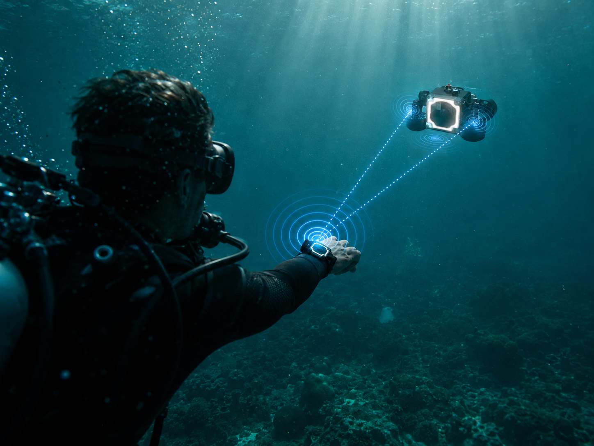
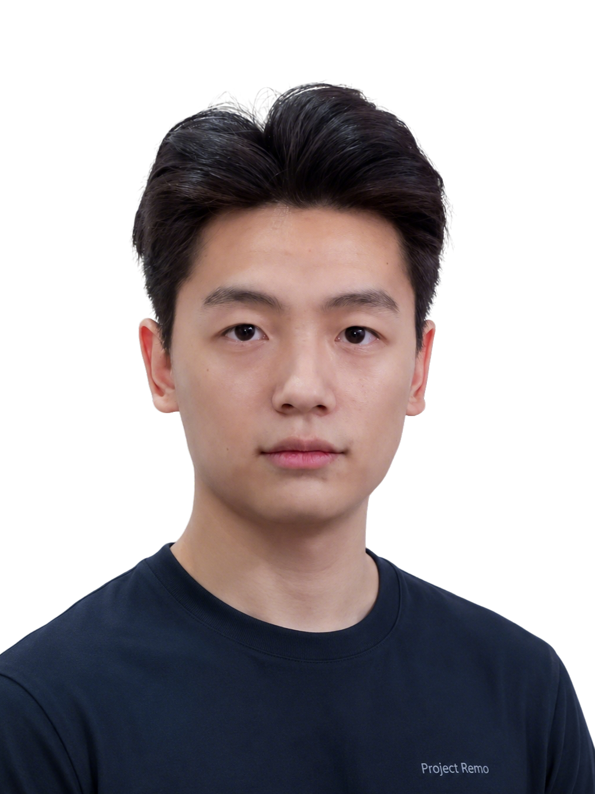

GoPro / Insta360 / DJI Action 已教育用户买相机，但水下仍主要靠手持和自拍杆。
10–20m 裸机 · 第三视角缺失Project Remo · Investor Brief · 2026
让水下拍摄，
像陆地一样简单。
全球首款消费级 · 声学自动跟拍 · 便携式水下相机。
The world's first consumer-grade underwater follow-cam.
A new product category that no incumbent owns — and we've studied who tried it before us.
4 项
发明 / 实用新型专利已受理
3 × 国家级
挑战杯 / RoboCup 一等奖
POC 已成型
1.5 kg · 20m 声学跟随
Lead 推进中
资深产业合伙人 · 深度沟通
2028 Q4
目标 Kickstarter 上线
公开页边界
摘要，不替代尽调材料
页面展示市场逻辑、技术进展与融资计划；详细文件在 NDA 后披露。
状态口径
已完成 / 推进中 / 模型假设分开呈现
避免把沟通意向、财务模型和已签署事项混在一起。
下一步验证
N=30+ 访谈与早期社媒验证
把消费者页等候名单转化为可追踪的需求证据。
一个 $7B 市场，
至今没有消费级赢家。
水下消费拍摄已经被「运动相机」和「拖线 ROV」两套不完整方案教育了十年。 调研数据显示：九成潜水员从未独立拍出满意的水下作品。
市场体量 · GLOBAL
$7B2026
全球水下相机市场，CAGR 11.2%（2026–2030）， 2030 年预测达 $11.1B。
The Business Research Company · 2025
人群体量 · ACTIVE DIVERS
9–14M人 / 年
全球年活跃娱乐潜水员，对应 $8.5–20.4B 潜水产业经济规模， 12.4 万跨 170 国的从业岗位。
Cell Reports Sustainability · 2025 (UCSD + UBC + SFU)
市场失败 · WHITE SPACE
8%
全球潜水员仅 8% 拥有专用水下设备， 55% 仍在用手机 + 防水袋的将就方案。 90% 从未独立拍出满意水下作品。
PADI + DEMA Fast Facts · 2024
现有方案的天花板
Chasing / QYSEA 解决了深度，但拖线缆和手控逻辑不适合娱乐潜水跟拍。
15–100m · 线缆限制行动仍是大量潜水员的临时方案，核心问题是漏水风险、色彩失真和水下操作受限。
55% 用户仍在将就海岛旅拍服务证明需求存在，但预约、成本和不可持续复用限制了规模化。
$40–80 / 小时
水下拍摄不是「小赛道」，而是被错误产品教育了十年的大赛道。
Project Remo Market Analysis · 2026.06
一手访谈 × 学术大样本，
双重验证痛点真实存在。
Pre-Seed 阶段完成 3 份深度访谈（每份 30–60 分钟），并与 PADI / DEMA / Atlas Aquatica 学术与行业大样本交叉验证。 诚实声明样本局限，关键结论用大样本兜底。
METHODOLOGY · 诚实声明
我们做了：3 份深度访谈（21–25 岁，海岛旅游高频用户）。
局限：一手样本量较小，作为质性洞察的方向锚定。
兜底：关键结论以 PADI Annual Report · Atlas Aquatica (Cell Reports Sustainability 2025) ·
DEMA 2024 Fast Facts 大样本数据复核。
下一步：v2 阶段扩展至 N=30+ 全球潜水员访谈（欧洲 / 东南亚 / 北美 / 日韩）。
3/3 访谈对象没有自己的水下相机；行业数据指向专用设备渗透率仍低。
8% 专用设备拥有率 · 55% 手机防水袋用户反复提到“没人帮拍”；潜店拍摄服务和 iBubble 历史侧面验证需求存在。
30%+ 潜店客户询问拍摄服务/设备出租消费者会自然拿 GoPro / Action / X 系列做参照，超过 $1,000 后决策明显变慢。
运动相机 ASP $349–549当前访谈明确排斥月费，商业模型因此以硬件和配件生态为主。
v2 阶段扩展至 N=30+ 复核用户不是要“玩具”，而是要能覆盖一瓶气、可靠防水、可带上飞机的设备。
≥ 60min 续航 · 电池 < 100WhPADI Annual Industry Report · DEMA 2024 Fast Facts · Atlas Aquatica (Cell Reports Sustainability 2025) · 内部访谈记录
我们用同一把尺子，
评估自己。
在动手做产品之前，我们先用 5C 框架横向审视这次机会：客户、能力、竞争、协作、时代趋势。 这是 Remo 内部所有重大决策都要过的同一道筛子，也是我们建议投资人用来快速判断的工具。
C1
Customer Needs客户需求
目标客户是谁？刚需还是 nice-to-have？
部分验证 · N=30+ 待补
C2
Company Skills团队能力
技术与执行能力是否匹配需求？
工程能力已具备
C3
Competition竞争格局
市场谁在做？我们的差异化壁垒是什么？
已完成复盘（含 iBubble）
C4
Collaborator协作生态
供应链 / 渠道 / 顾问网络谁愿意一起来？
深圳供应链路径明确
C5
Context时代趋势
是否在结构性大趋势上？
趋势明确
PRODUCT COMMERCIALIZATION · 5 阶段
当前位置：POC 完成 → 向 EP 推进
Idea → POC → KOL Beta（进行中）→ Commercial → 50% Penetration。 每一阶段的退出条件都被明确写下，避免「全部要赢」的早期错觉。
LEAN STARTUP · MVP 原则
先验证，后规模
Pre-Seed 用最小代价拿到市场答案，Seed 阶段才进入工业设计与代工选型，避免在 PMF 之前烧资本结构。
DECISION HYGIENE
每个里程碑设触发条件
Pre-Seed → Seed → KS → Series A，每一步都有可验证的「触发指标」，未达成则降速、复盘、不强行推进。
我们不试图说服你 Remo 一定会赢。我们试图证明：
在 5C 全维度下，这个机会值得被认真投入；并且我们具备在每一个 C 上推进的具体路径。 Project Remo · Investment Thesis · 2026.06
在 5C 全维度下，这个机会值得被认真投入；并且我们具备在每一个 C 上推进的具体路径。 Project Remo · Investment Thesis · 2026.06
$20B+ 收敛市场，
通过全球聚焦渠道可达。
运动相机 + 水下相机 + 水下无人机三条赛道在「消费级水下拍摄」象限收敛。 数据全部来自公开学术报告与行业研究，每个数字可溯源。

TAM · 总可寻址市场
$20.5B2026
运动相机 $8B + 水下相机 $7B + 水下无人机 $5.5B
加权平均 CAGR 12% · 保守去重后约 $15.4B
SAM · 可服务市场
$340M – $740M/ 年
600 万持证活跃潜水员 × 35% 设备意愿 × 25% 替换率
+ 浮潜爱好者 + 内容创作者 = 1.2M 台 / 年潜在
SOM · 可获得份额
$10M – $15M/ 3 年累计
Kickstarter $1.5–3M + 商业销售 $4–6M + 规模化 $6–8M
基于 Pre-Seed 阶段的保守可达数（2029–2031）
最快增长子赛道
13.17%CAGR
水下无人机 · 消费/娱乐细分 · 2026–2035。 增长率位居所有水下硬件细分之首。
SNS Insider · 2025
运动相机赛道格局变化
75.5% → 9.6%
GoPro 全球市占率从 2023 巅峰 75.5%， 跌至 2025 年 11 月 9.6%。DJI + Insta360 中国系合计 80%+。 水下是下一块战略高地。
HDIN Research · 2025
Grand View Research · Fortune Business Insights · TBRC · Coherent Market Insights · PADI · Atlas Aquatica (Cell Reports Sustainability 2025) · DEMA 2024 Fast Facts
不是迭代，
是新品类。
运动相机不能跟拍，ROV 不能脱线。Remo 在两者之间开辟新象限： 自由游动 × 自动跟随 × 便携消费级。
差异化 01 · 声学自动跟随
唯一不需要人手持的水下相机
声学 + 视觉双源融合，20m 直径范围内持续锁定潜水员。
差异化 02 · 出水即得片
云端 GAN 快速成片
深度感知 AI 还原真实色彩，App 推送，不用拔卡。
差异化 03 · 便携
1.5 kg · 能上飞机
相对 iBubble 5kg 减重 3 倍，符合 ICAO 可手提登机规定。
「水下界的 Insta360」—— 极客 × 可玩性 × 反 ROV 路线。
Project Remo · North-Star Positioning
四项核心技术，
每一项都对应已受理专利。
区别于 iBubble「视觉为主 + 声呐避障」的路线，Remo 采用「声学融合 + 视觉精构图 + AI 色彩还原 + 手势/手环交互」四层组合拳， 在浊水、强流、低光环境下依然可用。
06.1 · HydroLock
声学 + 视觉融合定位
⚑ 发明专利 #01 · 已受理
DYP-C01b · 20m 直径声学通信20m 跟随半径水声主链路 + 视觉精构图，在视觉跟丢的浊水中依然能到。
双源 SLAM声学解算大尺度位置，视觉解算姿态与构图，互补不抢权。
低光可用水声不依赖照度，黎明/黄昏与洞潜场景仍能稳定锁定。
失锁兜底自动归位 + 蜂鸣寻人机制，物理上不丢人、不丢机。
06.2 · TrueColor Depth
物理元数据约束的 GAN 色彩还原
⚑ 发明专利 #02 · 已受理← 拖动滑块对比 → · 云端处理时长以发布版为准
不是滤镜用深度、水况、光线元数据约束生成模型，结果符合真实物理世界。
云端快速处理出水后推送 App，目标减少拔卡与手动调色。
v0.4 已训练当前模型版本 v0.4，Seed 阶段升级至 v0.5（更稳的高浊度泛化）。
06.3 · TapCode
水下手势 / 敲击交互
⚑ 实用新型 #03 · 已受理
开始 / 暂停双击主机外壳
切换镜头右滑手势
构图模式OK 手势 · 锁焦
归航长按手环按键
水下不戴显示屏的现实下，所有核心动作必须能在「无 UI」状态下完成。 TapCode 把控制权放回潜水员手心。
06.4 · Beacon
声学手环 · 必送 package
⚑ 实用新型 #04 · 撰写中
不是配件，是「水下连接的另一端」
主机上的声学模组负责「看见你」，手环上的声学模组负责「告诉主机你在哪、要什么」。 两者是同一条链路的两端。这也是为什么手环必须随主机一起送 —— 它是体验完整性的前提。
- 水声定位发射端 · 20m 直径内主机持续锁定你
- 震动反馈 · 失锁/低电/拍摄确认全部走震动
- 潜水电脑表能力 · 深度 / 时间 / NDL，一表两用
- 可穿戴 OEM + 二次开发 · 供应链方案推进中，后续以样机报价与测试结果为准
iBubble 的失败之一是「视觉单源」在浊水跟丢。Remo 在每一项核心技术上都做了第二条腿：声学兜底视觉、手环兜底无 UI、AI 兜底人工调色。
Project Remo · Technology Moat · 2026.06
4 项专利已受理，
不是「计划申请」。
所有专利均在 2026 年 2 月集中提交，受理通知书可在尽调环节向 Lead Investor 出示。 下一步 2027 H1 启动 PCT 国际化。
覆盖水下自动定位、跟随拍摄与控制方法，是产品“能跟住人”的核心。
202610208723.3 · 10 项权项用物理环境元数据约束生成式还原，把出片质量从手工调色变成产品体验。
202610208686.6 · 18 项权项把视觉计算和运动控制分层，降低小型水下航行器的系统风险。
202620215579.1 · 10 项权项围绕潜水手环、震动反馈与水声链路做补充保护，重点服务交互闭环。
专利文本撰写中FTO · 自由实施分析
主要覆盖空中无人机、全景影像、单点防水和光学结构，未覆盖 Remo 的水下声学跟随闭环。
核心在拖线 ROV、机械臂和工业作业形态，产品架构与消费级自由游动跟拍不同。
iBubble 更偏视觉跟踪 + 声呐避障；Remo 主张声学融合、手环交互和云端出片闭环。
传感器与减压算法相关专利需谨慎处理；Remo 手环专利重点放在水声链路与拍摄交互。
NEXT-STEP IP STRATEGY
- 2027 H1启动 PCT 国际化（专利 01 + 02），覆盖 US / EU / JP / KR
- 2027 H2申请 ID 外观专利（Dyson 式设计护城河）
- 2028 +Pro 版本启动结构升级专利
白空间是结构性的，
但有人试过。
右上象限（高自动化 × 自由游动）目前空缺。 唯一尝试过类似定位的 iBubble 已退场 —— 下一节完整复盘。
高自动化 ▲
▼ 低自动化
◀ 拖线缆 / 手持
自由游动 ▶
★ Project Remo
目标位置 · 消费级旗舰段
iBubble (2018–2022)
€2,249–3,599 · 已被 Delair 收购
QYSEA Fifish V6
$1,299–3,000 · 拖线缆
Geneinno T1 Pro
$4,100 · 拖线缆研究级
GoPro · X5 · Action 5
$300–500 · 手持
Chasing Dory
$499 · 拖线
Seasam (iBubble B2B)
€12,000 · 工业转向
2×2 竞品矩阵 · 横轴 = 自由游动能力 · 纵轴 = 自动化程度
详细参数对比 · 收紧版
GoPro / Insta360 / DJI Action 解决了“防水相机”，没有解决“谁来帮我拍”。
Remo 差异：自由跟随 + 第三视角Chasing / QYSEA 能下深水，但线缆、手控和设备心智让它更像工具而不是旅行相机。
Remo 差异：无线自由游动 + 自动构图证明“水下自动跟拍”有人尝试过，但体积、价格、外购 GoPro 和路线选择让消费端未走通。
Remo 差异：轻量、自带相机、声学融合以 40m 防水、60min 续航、声学融合跟随和云端出片，把相机、跟拍和后期放进同一个设备体验。
核心判断：不是更便宜的 ROV，而是水下 Insta360
竞争不是“谁也不会做”，而是现有玩家的产品假设不同：
运动相机不负责跟拍，ROV 不负责自由旅行，iBubble 走得太重太贵。Remo 要卡的是中间空位。
Project Remo Competitive Analysis · 2026.06
iBubble 的教训，
Remo 的设计约束。
它验证了水下自动跟拍的需求，也暴露了消费级产品在定位、成本与可靠性上的难点。 Remo 将这些复盘转成可验证的产品和量产约束，而非照搬结论。
产品定位消费级自动跟拍
主要定价€2,249–3,599
产品负担5 kg · 外购 GoPro
结果2022 年被 Delair 收购
复盘重点：不是其最终归属，而是消费端体验、制造成本和可靠性没有同时成立。
iBubble 官方手册 · Tracxn · PitchBook · GPS World · Crunchbase四条关键教训 · 对应四项验证约束
先证明个人用户愿意买
iBubble：以潜水中心和高价套餐为主，个人用户的购买理由被稀释。
Remo 约束：先做 C 端可用性与付费意愿验证，潜店承担体验和渠道协同。
一台设备完成核心体验
iBubble：5 kg、需外购 GoPro，携带与决策成本叠加。
Remo 约束：集成相机、跟随和交互；以 1.5 kg 级便携目标约束设计取舍。
产品定义必须匹配成本结构
iBubble：制造与消费级定价之间缺少足够的规模缓冲。
Remo 约束：采用深圳协同与 OEM 路线，供应商、成本和良率在 EP/PVT 阶段逐项锁定。
浊水环境不能只靠视觉
iBubble：视觉为主的跟随方式在复杂水况下存在失锁风险。
Remo 约束：声学 + 视觉融合作为冗余路线，并用封闭 Beta 验证真实水况。
iBubble 让我们看到，需求存在不等于产品自然成立。
Remo 当前优先验证的是消费端愿不愿意买、设备能不能稳定跟、成本能不能量产。
Project Remo · Predecessor Post-mortem · 2026.06
仍然成立的产品判断
被验证的需求
- 技术深度：自主跟拍必须是真技术，而不是遥控玩具。
- 需求验证：潜水员确实需要第三视角与自动跟随。
- 体验底线：续航、便携与可靠防水必须一起成立。
Remo 的验证顺序
- 先用户：确认使用频次、价格带和闭环体验。
- 再工程：用 EP 与海水测试验证可靠性和可制造性。
- 后规模：在 PVT、成本和良率达标后再进入量产承诺。
3 条收入流 + 手环 bundle，
基准模型 Y3 毛利率 22%。
硬件 + 配件生态为主，SaaS 次要。手环必送 package 拉低毛利但保证体验完整性 —— 这是当前模型里的关键约束，后续会随供应链报价与用户验证更新。

收入结构演化 · 5 年
硬件 + 手环 bundle
85% → 60%
配件生态
12% → 25%
从保护壳、滤镜、挂载、浮力件逐步拉升 LTV。
SaaS 订阅
2% → 10%
保持次要收入定位：免费基础功能 + 超量云端处理付费。
品牌授权 / 其他
1% → 5%
等待硬件出货和创作者生态成型后再打开合作收入。
初期成本结构 · 手环随主机同送
Y1 BOM
≈ 80%of ASP
≈ 80%of ASP
关键判断：手环不是加购配件，而是自动跟随与无屏交互的体验组成部分。
密封、推进、感知和算力模块是首年成本主体。
采用可穿戴 OEM + 二次开发路径；具体合作方仍待供应链确认。
深圳代工协同、总装和可靠性测试预估。
供应链路线 · 先轻资产，后锁定
协同中心
深圳的供应链密度
围绕密封、推进、声学与消费电子零件缩短样机迭代和供应商沟通链路。
轻资产制造
不自建工厂
主机采用 OEM + 关键供应商协同；推进器与手环方案以样机报价和测试结果为准。
量产决策门
EP / PVT 后锁定
成本、良率与可靠性达到门槛后，才确认量产供应商与交付节奏。
单位经济模型 · 3 个阶段
Phase 1 · Kickstarter
0–5% 毛利
Kickstarter 的角色是验证需求、获取首批订单和优化量产方案，不以早期利润为目标。
Phase 2 · DTC + Amazon
约 10% 毛利
商业销售启动后，渠道与履约成本上升；重点是验证复购配件和交付质量。
Phase 3 · 规模化
22% 毛利目标
规模化采购、制造良率和配件生态共同改善单位经济模型，具体数值随报价更新。
用户研究显示，订阅接受度有限，配件接受度更高。
因此 硬件 + 配件生态是主营，SaaS 仅承担增值服务。 配件的复购与毛利模型将在 Beta 和首批交付后复核。 Project Remo Unit Economics · 内部规划
因此 硬件 + 配件生态是主营，SaaS 仅承担增值服务。 配件的复购与毛利模型将在 Beta 和首批交付后复核。 Project Remo Unit Economics · 内部规划
三阶段 · 三大洲，
现实时间线。
v2 时间线相对战略规划书 v1 整体推后 18–24 个月，对齐硬件创业 36–48 月平均周期与 Pre-Seed 现实进度。
Pre-Seed 关闭、Seed 启动、EP/PVT 样机验证、100 台 Closed Beta。核心目标不是曝光，而是证明“能跟、能拍、能量产”。
$200K–500K Pre-Seed · $800K–1.5M SeedKickstarter 作为媒体和订单验证，不作为长期融资工具。首批 1,000 台交付后再进入 Pre-A。
目标 $1.5–3M / 5,500 台 · Pre-A $3–5MAmazon + DTC + 潜店分销并行，Pro 版本和配件生态提高 LTV，Series A/B 用于规模化和渠道铺设。
Series A $8–15M · Series B $20–40Mv1 vs v2 · 时间线推后说明
上 Kickstarter 不是为了融资，是为了首批用户 + 媒体引爆 + 量产订单。
团队必须是 manufacturing-ready，不是 PPT 阶段。
Bambu Lab 复盘 · Remo 严控时间窗
已实现什么，
下一步做什么。
当前进展按「已完成 / 推进中 / 未启动」分层呈现，避免把规划事项写成既成事实。
已完成8
- POC 工程样机（2026.05）—— 1.5–1.6 kg · 5 推进器 + ArduSub · 微小正浮力
- 4 项专利已受理（2026.02）
- GAN 色彩还原模型 v0.4 训练完成
- 声学链路硬件方案选型（DYP-C01b · 20m 直径通信）
- HaaS 云端服务架构设计完成
- 全向超声波避障集成
- 5C / 精益创业 / 商品化 5 阶段 决策框架就位
- 产品介绍网站上线（main + v2 分支）
推进中6
- Pre-Seed 条款推进（市场调研材料已完成，仍需用户验证与条款确认）
- 资深产业合伙人多轮深度沟通
- 团队补齐核心合伙人（声学算法 + 工业设计 + 量产 PM）
- 深圳公司注册筹备（创始人毕业后落地深圳）
- 工业设计 ID 准备（参照小米美学路线）
- 社媒账号建立 + 用户圈粉（学影石 Insta360 模式）
未启动6
- EP 工程样机（待 Seed 后启动）
- 闭门 KOL Beta
- Kickstarter 上线
- 量产首批交付
- Amazon 商业销售
- 海外分销
未来里程碑 · 时间表
冠军班底 · 3 项国家级一等奖：挑战杯全国大学生 AI+ 应用赛 · RoboCup 中国赛 · 国际先进机器人 · 智慧海洋赛道。
团队执行力背书 · 2024–2026
$4.85M → $94.5M
营收路径 (2029–2033)。
5 年财务模型，2032 年现金流回正。具体定价未公开，财务模型按「消费级旗舰段」内部规划价位推演。
营收预测 · USD
毛利率演化 · 含手环 package
首批履行期仍以用户交付和口碑为优先，手环 package 会压低早期毛利。
EBITDA −$4.55M随着 BOM 下降和出货规模提升，模型进入现金流回正阶段。
EBITDA +$2.21M硬件毛利改善叠加配件生态，EBITDA 率进入更健康区间。
EBITDA +$13.08M · 14% margin
毛利率较行业标杆（Insta360 50%+ / DJI 35–45%）低 10–13pp，
主因是手环必须 package 同送，保证产品体验完整性 —— 这是 Remo 商业模式的关键约束，后续会随真实供应链报价、Beta 反馈和融资节奏持续校准。 Financial Model Assumption · 2026.06
主因是手环必须 package 同送，保证产品体验完整性 —— 这是 Remo 商业模式的关键约束，后续会随真实供应链报价、Beta 反馈和融资节奏持续校准。 Financial Model Assumption · 2026.06
敏感性分析
2031 营收 $18.6M
现金流回正顺延约 1 年2031 营收 $22.6M
2032 现金流 $3.5M2031 营收
2032 现金流 $7.61M2031 营收 $30.6M
2032 现金流 $11.5M假设 01 · 增长率
消费水下设备细分 CAGR 13.17% (Coherent Market Insights) + Remo 渗透率叠加 → 前 3 年实际增速 100–150%。
假设 02 · 市占率
到 2033 年达全球水下相机市场（$13B）的 0.7% —— 相当保守，对照 Insta360 同期 1.5%+。
假设 03 · BOM 下降曲线
每年 9–12%（深圳代工 + 量产规模化 + 测海科技推进器降本）。
Pre-Seed · $200K–500K
@ $3–5M 目标估值区间。
当前正在推进资深产业合伙人 Lead 沟通，并计划寻找 1–3 名跟投人， 共同完成 Pre-Seed 条款确认与用户验证。
Pre-Seed Lead Investor · 深度沟通中
资深产业合伙人
智能硬件 / 工业 AI 产业背景 · Founder Mentor
4 次
深度尽调面谈
4.5 小时
累计沟通时长
已形成
市场调研材料
经历 4 次深度沟通，已围绕市场规模、iBubble 复盘、手环 package 与深圳供应链路径形成共识。 当前仍需完成用户验证与条款确认。身份将于尽调阶段在 NDA 下对认真投资人披露。
本轮 Pre-Seed · 详细信息
条款 · TERMS
- 金额：$200K – $500K（最少 $50K / 席位）
- 估值：$3M – $5M post-money 目标区间
- 出让：合计 8–15% equity
- 工具：SAFE（YC 标准模板） · 含 most-favored-nation 条款
- 节奏：Lead 条款推进中 · 目标 2026.12 前完成 Pre-Seed 关闭
资金用途 · 12 个月跑道
- 35%研发持续（声学算法 + GAN v0.5）
- 20%工业设计启动（资深 ID 工作室）
- 20%团队扩充（核心技术合伙人 1–2 人）
- 10%法务 + IP（PCT 启动 + 公司注册）
- 10%营销启动（邮件订阅页 + 初期 PR）
- 5%运营储备
承诺产出 · DELIVERABLES
- 6 个月：ID 设计稿落地 + 核心技术合伙人入伙
- 8 个月：启动 EP 工程样机开发
- 10 个月：深圳公司正式注册 + PCT 启动
- 12 个月：启动 Seed 轮（目标估值 $6–10M）
为什么这一轮值得参与
- 极早期估值：Insta360 Seed 2015 IDG $1M / 20% = $5M post-money · 同等区间，但 4 项专利已落地
- 产业沟通基础：资深产业合伙人已进行多轮深度沟通，尽调问题被提前暴露和整理
- 低 burn rate：团队尚未规模化 · Pre-Seed 资金可覆盖 12 个月清晰跑道
- Seed → KS → Series A 路径清晰：每个里程碑都设触发条件，不强行推进
为什么是「现在」
01 · 中国系崛起窗口
GoPro 跌至 9.6% · DJI + Insta360 80%+
运动相机赛道易主中，水下是下一块战略高地。错过这个窗口，再做就是「跟随者」。
02 · 上一代先驱已死
iBubble 2022 被 Delair 收购
白空间被验证过、被错过过 —— 7 年没人补位。Remo 直接继承这个真空，但用相反决策。
03 · 团队 + IP 有基础
POC 完成 · 4 专利已受理
不是「想做」，是「已经做出来了」。资金到位即可向 EP / 量产推进，不是从零开始。
04 · Lead 推进中
资深产业合伙人深度沟通
Pre-Seed 最稀缺的不是钱，是产业层面的判断与约束 —— 这一项正在形成可执行共识。
完整融资路线图 · 7 轮（推后版）
$200–500K金额$3–5M投后估值8–15%出让
$800K–1.5M金额$6–10M投后估值12–15%出让
$1–2M金额$12–18M投后估值8–12%出让
$3–5M金额$25–40M投后估值10–12%出让
$8–15M金额$60–100M投后估值12–15%出让
$20–40M金额$200–300M投后估值10–12%出让
$40–80M金额$500M–1B投后估值8–10%出让
估值依据：
Insta360 Seed 2015 IDG $1M / 20% = $5M post-money（投后） · Notilo Plus 2018 estimated $8–10M · 冠军班底 + 4 项专利落地 = 1.5–2× 标准溢价。
现金桥模型： 当前到 Series A 累计需融 ~$8M（Pre-Seed + Seed + Angel + KS + Pre-A）。 对照 Insta360 累计 $39M / IPO $9.9B，Remo $8M 是合理保守的硬件创业现金需求。
现金桥模型： 当前到 Series A 累计需融 ~$8M（Pre-Seed + Seed + Angel + KS + Pre-A）。 对照 Insta360 累计 $39M / IPO $9.9B，Remo $8M 是合理保守的硬件创业现金需求。
Champion-grade 工程团队，
不是 PPT 创业。
创始人率队 3 项国家级一等奖。完整工程能力覆盖：声学 + 视觉 + 控制 + 结构 + 嵌入式 AI。

杨文俊 · Wenjun Yang
Founder & CEO
21 岁 · 北京信息科技大学自动化卓越工程师班。 水下机器人 + 声学融合 + 视觉 SLAM 跨学科背景。 ArduSub / PyTorch / SolidWorks / Altium 全栈工程能力。
- 2026挑战杯全国大学生 AI+ 应用赛 · 国家级一等奖（「深智鲨」项目负责人）
- 2025RoboCup 中国赛 · 水下机器人专项赛 · 国家级一等奖 · 冠军
- 2024国际先进机器人 · 智慧海洋赛道 · 3 × 国家级一等奖
核心班底（具体披露于尽调阶段）
工程能力完整覆盖 5 大方向：声学链路 / 视觉 SLAM / 控制系统 / 结构与防水 / 嵌入式 AI。 具体成员清单在尽调阶段对签 NDA 的投资人披露。
未来招聘 · Pre-Seed → Seed 期间
01首席算法工程师 · GAN + SLAM 方向
02量产 PM · DJI / Insta360 系优先
03海外 BD · 北美 + 东南亚潜店渠道
04渠道总监 · Amazon + 跨境电商
Advisor 网络招募中：水下机器人专家 + 消费电子量产专家。